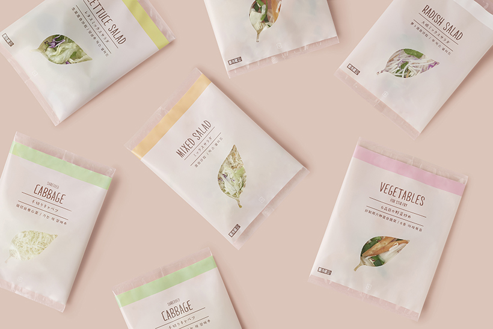
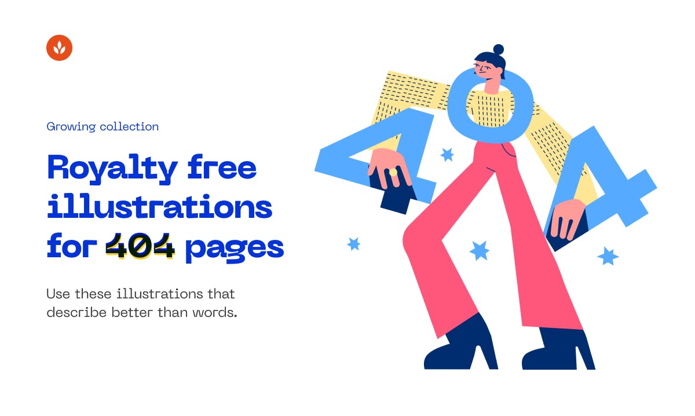
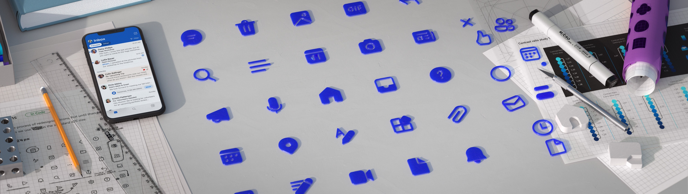
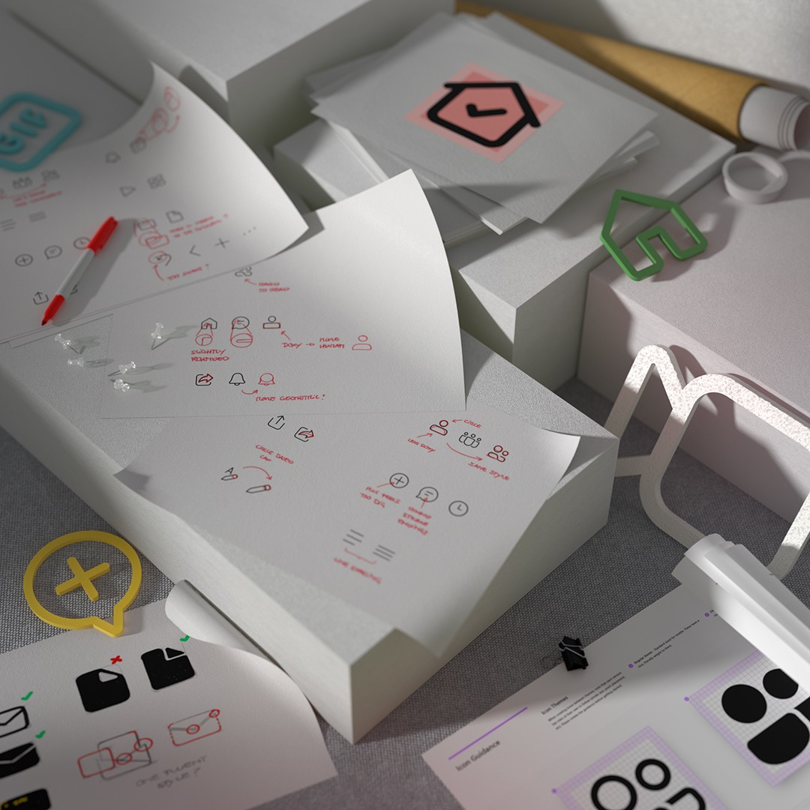
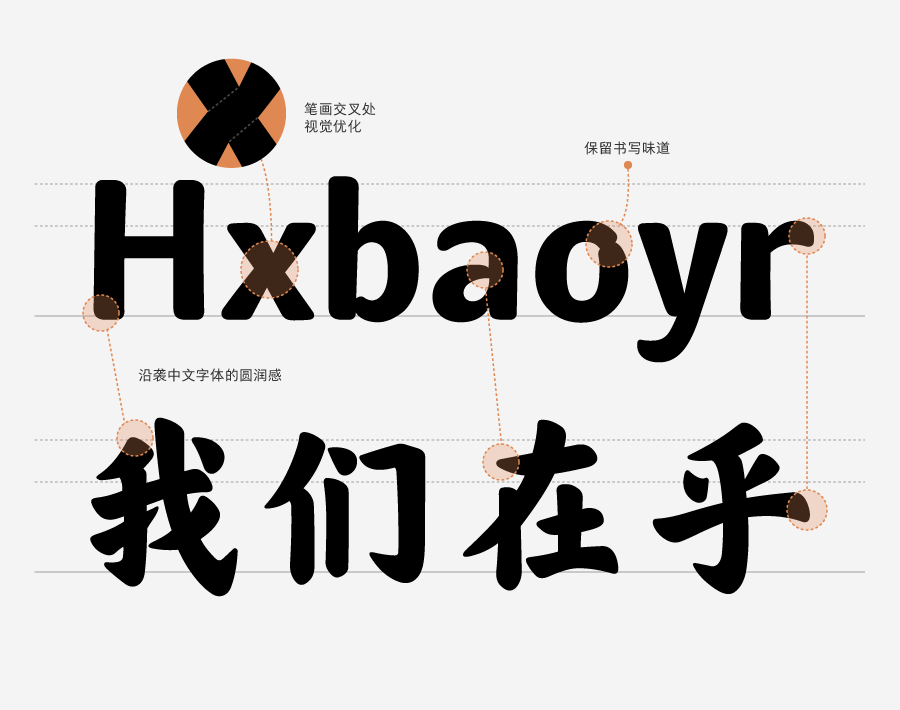
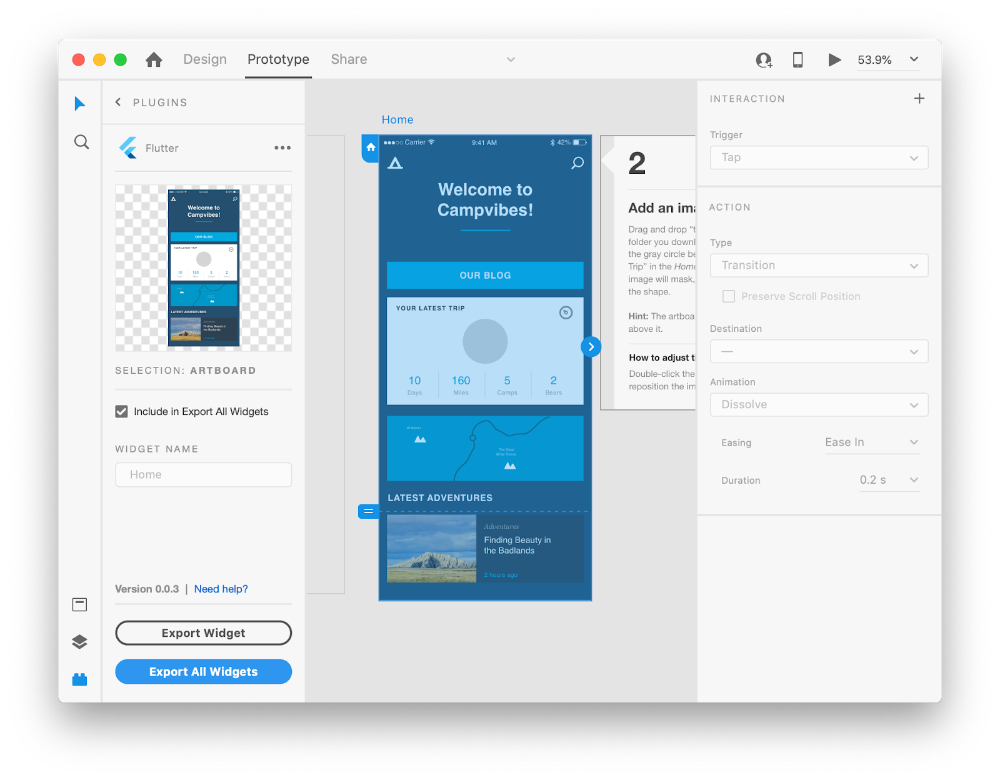

设计周刊 Design Weekly #07
Thu, May 14, 2020
🏷 设计灵感：
罗森换新装，好一记溜进日常的低饱和可爱
https://mp.weixin.qq.com/s/vXzcxxEKAy8cz2cLJMAUEg
日本罗森，请来了擅长让各位“ ! ”的 nendo，用设计好好整顿了一次自有品牌们的队伍纪律。
捣鼓过后的企业辨识系统，确实清晰好认，也更富品牌感。

🏷 设计资源：
404 Illustrations
https://error404.fun/?ref=producthunt
800多幅开源插画，打造完美 404 页面，同时可以无限制使用。

🏷 设计文章
微软开发开源图标系统
https://medium.com/microsoft-design/developing-an-open-source-icon-system-at-microsoft-b1796315df9f
图标作为一种设计语言，为用户提供了轻松愉快的信息体验。来看一下微软团队对新的 Fluent 图标系统的 Q+A 对话吧~


🏷 设计新闻
可口可乐在乎体：写在乎的事，给在乎的人
https://mp.weixin.qq.com/s/3A49hplUiiL5iecJJeJwig
“快乐水”出字体了！是“在乎”味儿的~。
在中国市场深耕了41年，可口可乐公司这家全球化品牌，在这里经营、生活、成长，也深受中国文化和精神的启发。可口可乐中国的企业价值观和中国文化中的“在乎”很有共鸣。

🏷 随便看看
从 Adobe XD 导出 Flutter 代码
https://medium.com/flutter/announcing-adobe-xd-support-for-flutter-4b3dd55ff40e
Adobe 和 Flutter 双双宣布 XD to Flutter 插件现在已经进行更广泛的公开测试了。
很多工具都致力于简化设计者到开发人员的工作流程，Adobe 和 Flutter 的合作无疑给大家带来了更多新鲜的体验。
